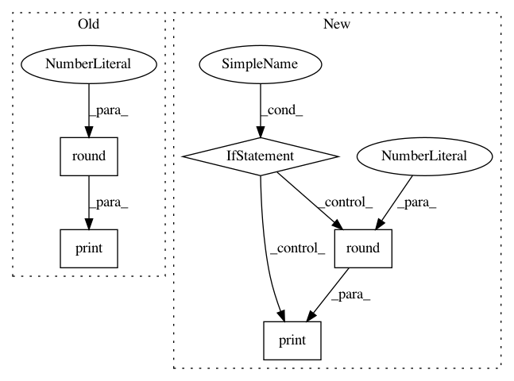

f04634f2d427763d3b51af4ad6213fe5ad37fbf7,python-package/mlbox/preprocessing/reader.py,Reader,train_test_split,#Reader#Any#Any#,271
Before Change
print("number of test samples : " + str(df_test.shape[0]))
print("")
print("Top 5 sparse features (% missing values on train set):")
print(np.round((df_train.isnull().sum()*100./df_train.shape[0]).sort_values(ascending=False)[:5],1))
////////////////////////////////////////////////////////////////////////////////////////////////////////////
//////////////////////////////////// encoding target ////////////////////////////////////
////////////////////////////////////////////////////////////////////////////////////////////////////////////
After Change
print("number of training samples : " + str(df_train.shape[0]))
print("number of test samples : " + str(df_test.shape[0]))
if(sparse):
print("")
print("Top sparse features (% missing values on train set):")
print(np.round(sparse_features[sparse_features>0.0][:5],1))
else:
print("")
print("you have no missing values on train set...")
////////////////////////////////////////////////////////////////////////////////////////////////////////////
//////////////////////////////////// encoding target ////////////////////////////////////
////////////////////////////////////////////////////////////////////////////////////////////////////////////
task = "regression"
if (y_train.nunique() <= 2):
task = "classification"
In pattern: SUPERPATTERN
Frequency: 3
Non-data size: 5
Instances
Project Name: AxeldeRomblay/MLBox
Commit Name: f04634f2d427763d3b51af4ad6213fe5ad37fbf7
Time: 2017-07-21
Author: axelderomblay@gmail.com
File Name: python-package/mlbox/preprocessing/reader.py
Class Name: Reader
Method Name: train_test_split
Project Name: pymc-devs/pymc3
Commit Name: df24b86d68db0a0f4f6947b806e7a0facc47c2b8
Time: 2016-06-05
Author: chris.fonnesbeck@vanderbilt.edu
File Name: pymc3/variational/advi.py
Class Name:
Method Name: run_adagrad
Project Name: pymc-devs/pymc3
Commit Name: df24b86d68db0a0f4f6947b806e7a0facc47c2b8
Time: 2016-06-05
Author: chris.fonnesbeck@vanderbilt.edu
File Name: pymc3/variational/advi.py
Class Name:
Method Name: advi_minibatch